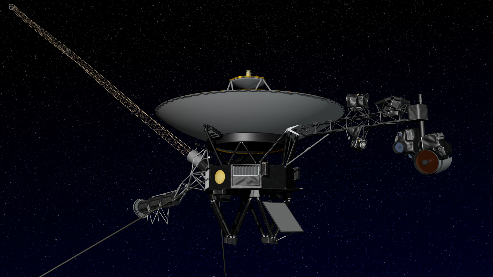

Voyager 1 becomes first human-made object to leave solar system
by Wazzahap Enning

At the edge of the heliosphere, you wouldn't know by looking whether you left the cradle of humanity behind and floated out into interstellar space. You would just see unfathomably empty space, no matter which side of the invisible line you were on.
But scientists now have strong evidence that NASA's Voyager 1 probe has crossed this important border, making history as the first human-made object to leave the heliosphere, the magnetic boundary separating the solar system's sun, planets and solar wind from the rest of the galaxy.
"In leaving the heliosphere and setting sail on the cosmic seas between the stars, Voyager has joined other historic journeys of exploration: The first circumnavigation of the Earth, the first steps on the Moon," said Ed Stone, chief scientist on the Voyager mission. "That's the kind of event this is, as we leave behind our solar bubble."
A new study in the journal Science suggests that the probe entered the interstellar medium around August 25, 2012. You may have heard other reports that Voyager 1 has made the historic crossing before, but Thursday was the first time NASA announced it.
The twin spacecraft Voyager 1 and 2 were launched in 1977, 16 days apart. As of Thursday, according to NASA's real-time odometer, Voyager 1 is 18.8 billion kilometers (11.7 billion miles) from Earth. Its sibling, Voyager 2, is 15.3 billion (9.5 billion) kilometers from our planet.
At the edge of the heliosphere, you wouldn't know by looking whether you left the cradle of humanity behind and floated out into interstellar space. You would just see unfathomably empty space, no matter which side of the invisible line you were on. But scientists now have strong evidence that NASA's Voyager 1 probe has crossed this important border, making history as the first human-made object to leave the heliosphere, the magnetic boundary separating the solar system's sun, planets and solar wind from the rest of the galaxy. "In leaving the heliosphere and setting sail on the cosmic seas between the stars, Voyager has joined other historic journeys of exploration: The first circumnavigation of the Earth, the first steps on the Moon," said Ed Stone, chief scientist on the Voyager mission. "That's the kind of event this is, as we leave behind our solar bubble." A new study in the journal Science suggests that the probe entered the interstellar medium around August 25, 2012. You may have heard other reports that Voyager 1 has made the historic crossing before, but Thursday was the first time NASA announced it. The twin spacecraft Voyager 1 and 2 were launched in 1977, 16 days apart. As of Thursday, according to NASA's real-time odometer, Voyager 1 is 18.8 billion kilometers (11.7 billion miles) from Earth. Its sibling, Voyager 2, is 15.3 billion (9.5 billion) kilometers from our planet.